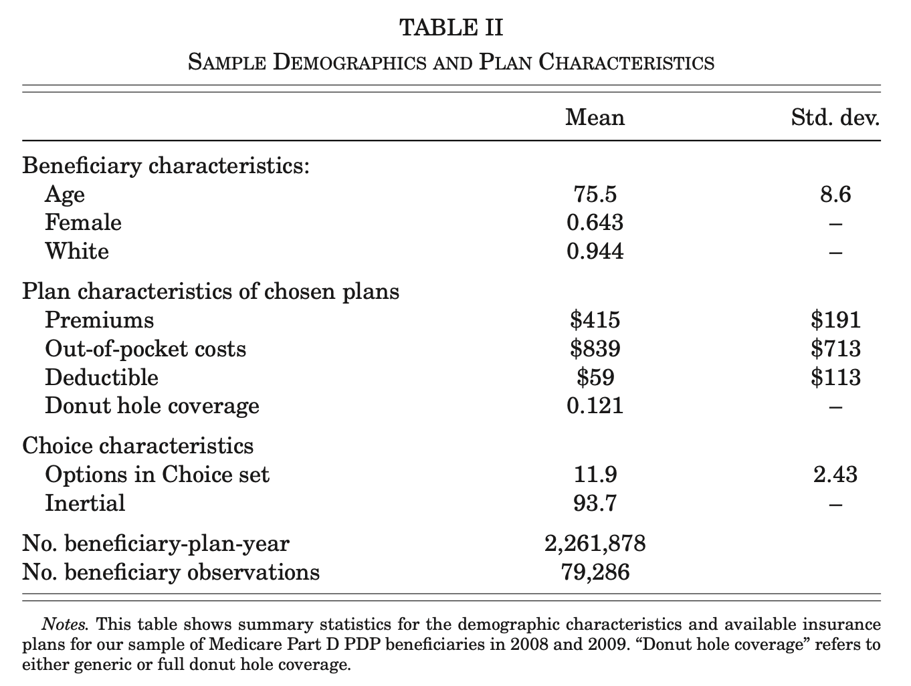
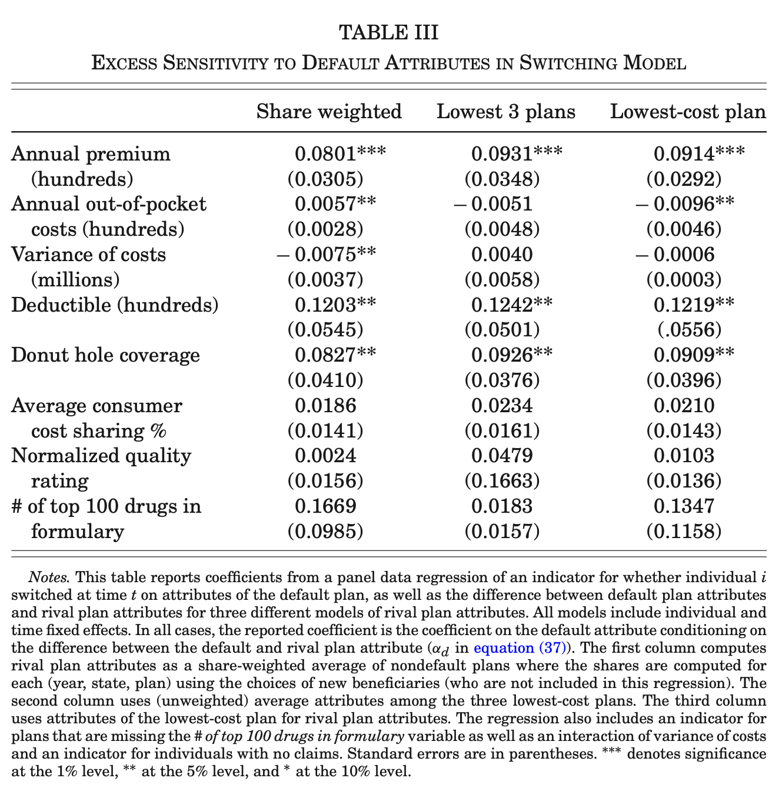
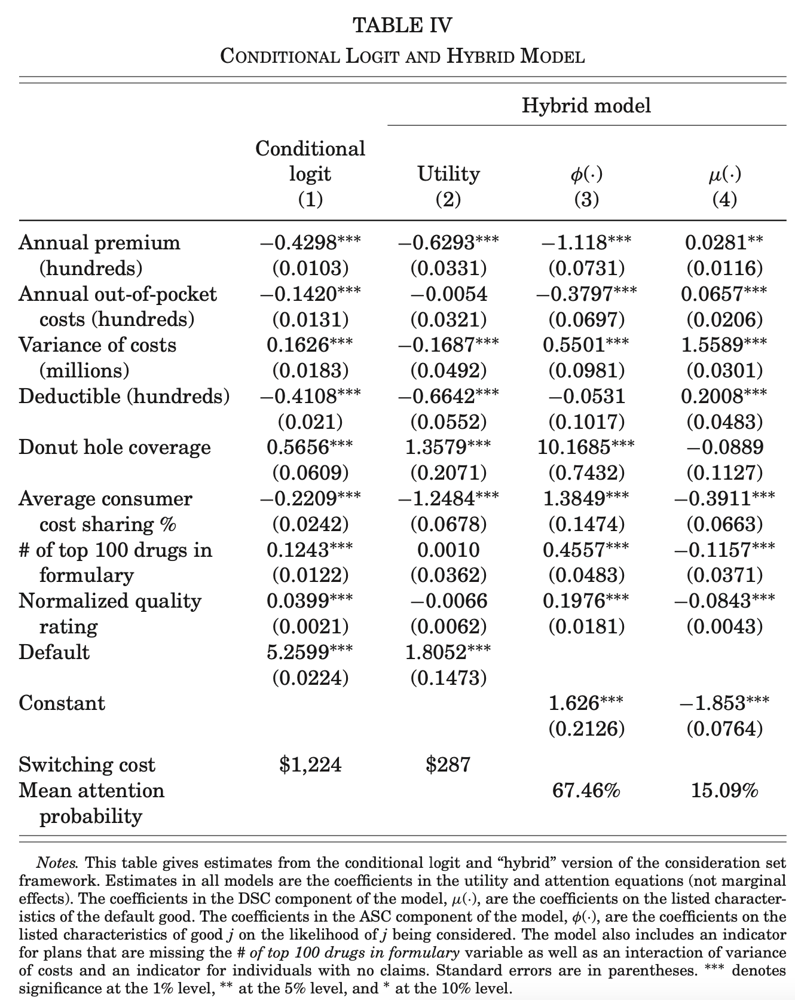
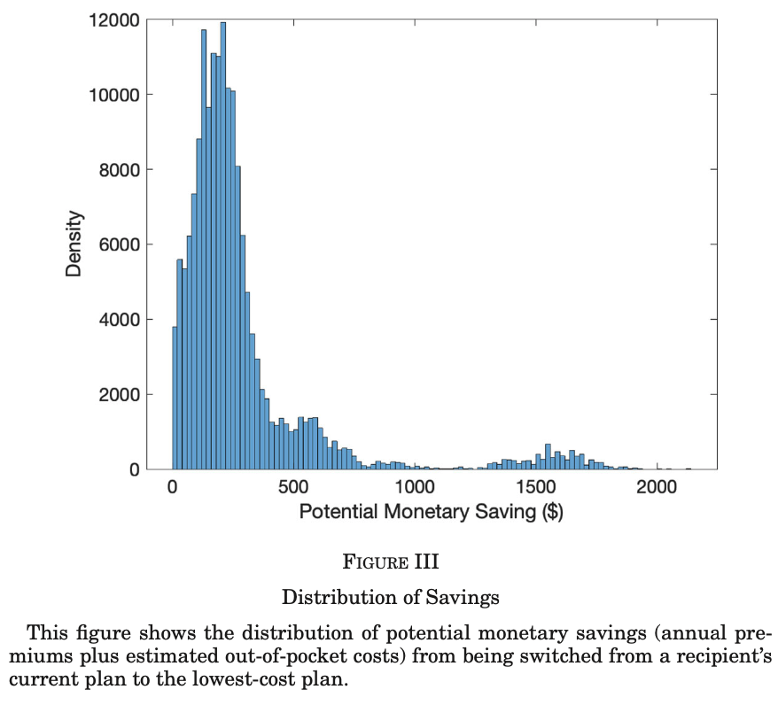
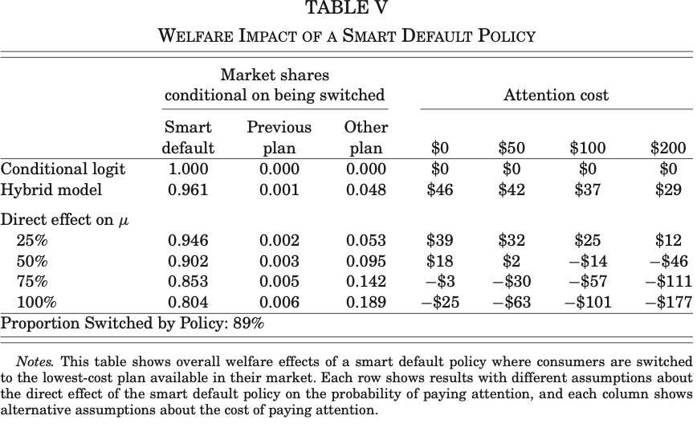
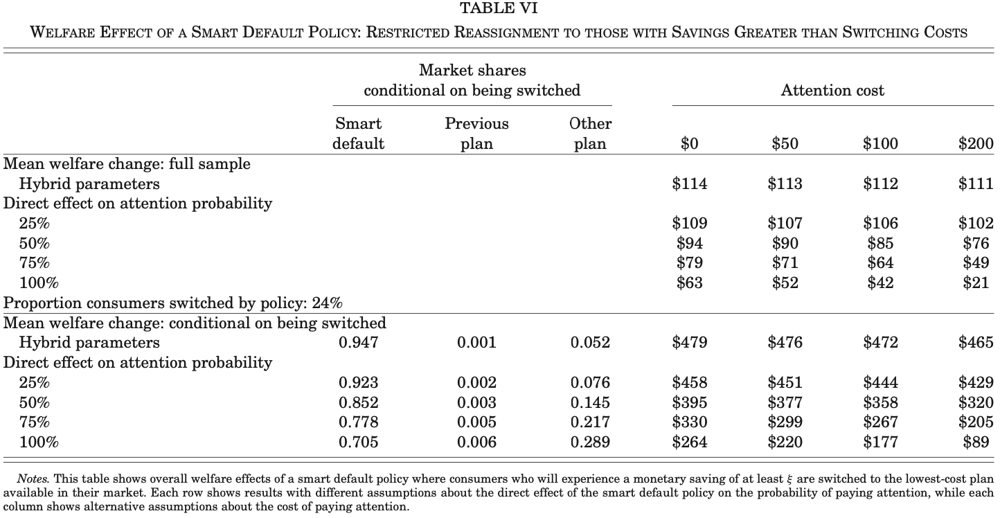
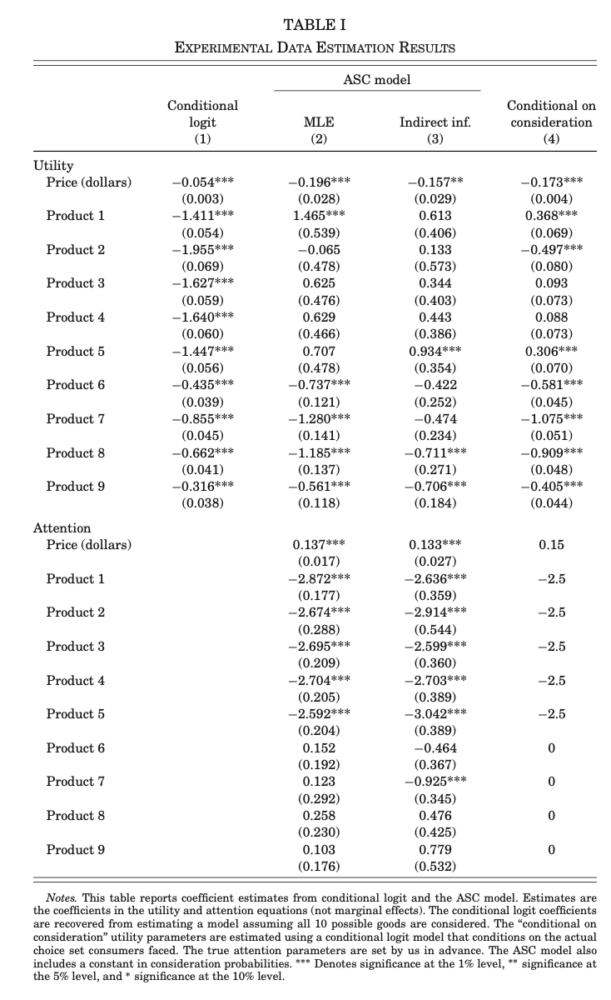

|
Introduction
Discrete-choice models generally assume consumers consider all available options.
What factors lead consumers to become aware of more options?
Will inertial consumers “wake up” in response to a price increase but remain unresponsive if rivals lower prices?
First order welfare consequences.
If price changes perturb demand, how could we tell if this effect is from consideration set or from utility?
This paper provide a source of idenfitication for two consideration set models:
DSC model, default specific consideration model and ASC alternative specific model.
individual i, J+1 products \(\mathcal{J} = \{ 0, 1, \ldots, J \}, J \geqslant 1\), \(p_j \) for each j. All prices are strictly positive.
(Defination) The consideration set: the (unobserved) set of goods that a consumer considers.
Scenario 1: general consideration set.
\(\mathcal{P} (\mathcal{J})\): the power set of goods, with any given elements indexed by \(C\).
The set of consideration sets containing j
| \(\displaystyle \mathcal{\mathbb{P}} (j) = \{ C : \{ 0, j \} \subseteq C \in \mathcal{P} (\mathcal{J}) \}\) | (1) |
observed choice probabilities
| \(\displaystyle s_{ j} (\boldsymbol{p}) = \sum_{C \in \mathcal{\mathbb{P}} (j)} \pi_C (\boldsymbol{p}) s_j^{\ast} (\boldsymbol{p} |C)\) | (2) |
| \(\displaystyle \sum_{C \in \mathcal{P} (\mathcal{J})} \pi_C (\boldsymbol{p}) = 1, \sum_{j \in C} s_j^{\ast} (\boldsymbol{p} |C) = 1\) | (3) |
Baseline theory assumptions.
Assumption 1. Daly-Zachary Conditions: unobserved latent choice probabilities,\(s_j^{\ast} (\boldsymbol{p} |C)\), satisfy the following conditions everywhere on \(\mathbb{R }_{+ +}^{J + 1} .\)
Properties: \(\)\(s_j^{\ast} (\boldsymbol{p} |C) \geqslant 0, \sum_{j \in C} s_j^{\ast} (\boldsymbol{p} |C) = 1,\)and \(\frac{\partial^J s_j^{\ast} (\boldsymbol{p} |C)}{\partial p_0 \ldots \partial p_{j - 1} \partial p_{j + 1} \ldots \partial p_J}\) exists finitely, is \(\geqslant 0\), and is continuous.
Symmetry: cross-price derivatives are symmetric:
\(\)\(\frac{\partial^J s_j^{\ast} (\boldsymbol{p} |C)}{\partial p_{j^{'}}} = \frac{\partial^J s_j^{\ast} (\boldsymbol{p} |C)}{\partial p_{j }}\).
Absence of nominal illusion: \(s_j^{\ast} (\boldsymbol{p} + \delta |C) = s_j^{\ast} (\boldsymbol{p} |C)\).
Examples: ARUM(nested and mixed logit)
| \(\displaystyle u_j = v (p_j) + \varepsilon_j\) | (4) |
| \(\displaystyle = a_j - \beta p_j + \varepsilon_j\) | (5) |
Baseline data assumptions.
In discussing identification, we treat \(s_{ j} (\boldsymbol{p}), \boldsymbol{P}\), and all cross-derivatives as known for all possible prices. Standard when addressing nonparametric identification of structural functions (Berry and Haile 2016)
Assumption 2. Population market shares, own- and cross-price derivatives observed at \(\boldsymbol{P} \in \mathbb{R }_{+ +}^{J + 1}\): the observables consist of the variables:
| \(\displaystyle \left\{ s_{ j} (\boldsymbol{p}), \frac{\partial^J s_j (\boldsymbol{p})}{\partial p_{j^{'}}} \right\}_{j, j' \in J}\) | (6) |
Given Assumption 1, in our baseline model only one mechanism is available to generate cross-derivative assymmetries: imperfect consideration.
Theorem
Let observed choice probabilities have the following structure:
| \(\displaystyle s_{ j} (\boldsymbol{p}) = \sum_{C \in \mathcal{\mathbb{P}} (j)} \pi_C (\boldsymbol{p}) s_j^{\ast} (\boldsymbol{p} |C)\) | (7) |
Given assumption 1 and assuming that \(\pi_C (\boldsymbol{p})\) is differentiable wrt P,
if \(\)\(\)
| \(\displaystyle \frac{\partial^J s_j^{\ast} (\boldsymbol{p} |C)}{\partial p_{j^{'}}} \neq \frac{\partial^J s_j^{\ast} (\boldsymbol{p} |C)}{\partial p_{j }}\) | (8) |
or
| \(\displaystyle s_{ j} (\boldsymbol{p}) \neq s_{ j} (\boldsymbol{p} + \delta)\) | (9) |
for \(\delta \neq 0\), then \(\pi_{\mathcal{J}} (\boldsymbol{P}) < 1\), where \(\pi_{\mathcal{J}} (\boldsymbol{P})\) is the probability that an individual considers all goods.
Proof
Proof. The set of consideration sets containing j and j'
\(\frac{\partial s_j}{\partial p_{j'}} - \frac{\partial s_{j'}}{\partial p_j} = \sum_{C \in \mathbb{P} (j)} {\color{cyan}{\frac{\partial \pi_C}{\partial p_{j'}}}} s_j^{\ast} (C) - \sum_{C' \in \mathbb{P} (j')} {\color{cyan}{\frac{\partial \pi_{C'}}{\partial p_j}}} s_{j'}^{\ast} (C') + \sum_{C'' \in \mathbb{P} (j, j')} \pi_{C''} \left( \frac{\partial {\color{red}{s_{j {\color{red}{}}}^{\ast}}} (C'')}{\partial {\color{red}{p_{j'}}}} - \frac{\partial {\color{green}{s_{j'}^{\ast}}} (C'')}{\partial {\color{green}{p_j}}} \right)\)
\(= \sum_{C \in \mathbb{P} (j)} {\color{cyan}{\frac{\partial \pi_C}{\partial p_{j'}}}} s_j^{\ast} (C) - \sum_{C' \in \mathbb{P} (j')} {\color{cyan}{\frac{\partial \pi_{C'}}{\partial p_j}}} s_{j'}^{\ast} (C')\)
\(\)
(we omit the effect of price on latent choice probability for simplicity.)
Thus, non-zero cross-derivative asymmetries imply:
\(\)\(\sum_{C \in \mathbb{P} (j)} {\color{cyan}{\frac{\partial \pi_C}{\partial p_{j'}}}} s_j^{\ast} (C) \neq \sum_{C' \in \mathbb{P} (j')} {\color{cyan}{\frac{\partial \pi_{C'}}{\partial p_j}}} s_{j'}^{\ast} (C') \Rightarrow \operatorname{either}\operatorname{or}\operatorname{both}\operatorname{not}\operatorname{zero}.\)
Given that \(\pi_C\) is proper probability, this is only possible when \(\pi_{\mathcal{J}} < 1\).\(\Box\)
| \(\displaystyle \begin{array}{l} s_0 (\boldsymbol{P}) = (1 - \mu (p_0)) + \mu (p_0) s_0^{\ast} (\boldsymbol{P \mathcal{}} | \mathcal{J})\\ s_j (\boldsymbol{P}) = \mu (p_0) s_j^{\ast} (\boldsymbol{P \mathcal{}} | \mathcal{J}) \end{array}\) | (10) |
Identifying changes in consideration probabilities.
Using similar methods in proof of theorem 1 (let j' be 0), we got
| \(\displaystyle \frac{\partial s_j}{\partial p_{j'}} - \frac{\partial s_{j'}}{\partial p_j} = \frac{\partial s_j}{\partial p_0} - \frac{\partial s_0}{\partial p_j} = \mu_0 \frac{\partial s_j^{\ast} (\boldsymbol{P \mathcal{}} | \mathcal{J})}{\partial p_0} + \frac{\partial \mu_0}{\partial p_0} s_j^{\ast} (\boldsymbol{P \mathcal{}} | \mathcal{J}) - \mu_0 \frac{\partial s_0^{\ast} (\boldsymbol{P \mathcal{}} | \mathcal{J})}{\partial p_j}\) | (11) |
| \(\displaystyle = \frac{\partial \mu_0}{\partial p_0} s_j^{\ast} (\boldsymbol{P \mathcal{}} | \mathcal{J})\) | (12) |
| \(\displaystyle = \frac{\partial \log (\mu_0)}{\partial p_0} s_j (\boldsymbol{P \mathcal{}} | \mathcal{J})\) | (13) |
| \(\displaystyle \frac{\partial \log (\mu_0)}{\partial p_0} = \frac{1}{s_j (\boldsymbol{P \mathcal{}} | \mathcal{J})} \left[ \frac{\partial s_j}{\partial p_0} - \frac{\partial s_0}{\partial p_j} \right]\) | (14) |
DSC ct'd
Interpretation: changes in the probability of full consideration are identified from data on choice probabilities (market shares).
Intuition: if the price of the default plan experience a large change \(\rightarrow\)consumers to “wake-up”, or to reevaluate the weight on default plan, then the non-default plan would be more sensitive to the price of the default plan than is the default plan to the price of the nondefault plan.
This behavior pattern is noted in marketing and health insurance literature:
Ho, Hogan, and Scott Morton (2017) and Moshkin and Shachar (2002).
Theorem
1.Identification of changes in DSC consideration probabilities.
Given assumptions 1 and 2, then \(\frac{\partial \log (\mu_0)}{\partial p_0}\) is constructively identified.
2. Identifying the level of consideration. (How to compute \(1 - \mu_0\), the default probability.)
| \(\displaystyle \log (\mu (\infty)) - \log (\mu (\tilde{p}_0)) = \int_{\tilde{p}_0}^{\infty} \frac{1}{s_j (\boldsymbol{P \mathcal{}} | \mathcal{J})} \left[ \frac{\partial s_j}{\partial p_0} - \frac{\partial s_0}{\partial p_j} \right] \operatorname{dp}_0\) | (15) |
Assumption DSC: As \(p_0 \rightarrow \infty, \mu (p_0) \rightarrow 1\).
Theorem
| \(\displaystyle \mu (\widetilde{p }_0) = \exp \left( - \int_{\tilde{p}_0}^{\infty} \frac{1}{s_j (\boldsymbol{P \mathcal{}} | \mathcal{J})} \left[ \frac{\partial s_j}{\partial p_0} - \frac{\partial s_0}{\partial p_j} \right] \operatorname{dp}_0 \right)\) | (16) |
with more structure, like special functional form, we could require less price variation to identify \(\mu (p_0)\).
E.g.,
| \(\displaystyle \mu (p_0) = \frac{\exp (\gamma_0 + \gamma_p p_0)}{1 + \exp (\gamma_0 + \gamma_p p_0)}\) | (17) |
Theorem
| \(\displaystyle \mu (p_0) = \frac{\exp (\gamma_0 + \gamma_p p_0)}{1 + \exp (\gamma_0 + \gamma_p p_0)}\) | (18) |
ASC model
- Each good has an independent consideration probability
- that probability depends on its own characteristics
| \(\displaystyle \pi_C (\boldsymbol{P}) = \Pi_{j \in C} \phi_j (p_j) \Pi_{j' \not\in C} (1 - \phi_{j'} (p_{j'}))\) | (19) |
For example {1,2,3,4,5} C={1,2,3} \(\pi_C = P 1 P 2 P 3 (1 - P 4) (1 - P 5)\). That is the intuition.
| \(\displaystyle s_j (\boldsymbol{P}) = \sum_{C \in \mathbb{P} (j)} \pi_C (\boldsymbol{P}) s_j^{\ast} (\boldsymbol{P} |C) .\) | (20) |
Identifying consideration probabilities. Let \(\overline{\boldsymbol{P}_j}\) give the price vector \(\boldsymbol{P}\) under which \(p_j\) is approaching \(\infty\) with \(s_j (\overline{\boldsymbol{P}_j}) = 0\).
As shown in online appendix A,
| \(\displaystyle \frac{\partial s_0 (\boldsymbol{P})}{\partial p_j} - \frac{\partial s_j (\boldsymbol{P})}{\partial p_0} = \frac{\partial \log (\phi_j)}{\partial p_j} (s_0 (\boldsymbol{P}) - s_0 (\overline{\boldsymbol{P}_j}))\) | (21) |
| \(\displaystyle \frac{\partial s_j (\boldsymbol{P})}{\partial p_{j'}} - \frac{\partial s_{j'} (\boldsymbol{P})}{\partial p_j} = \frac{\partial \log (\phi_{j'})}{\partial p_{j'}} (s_j (\boldsymbol{P}) - s_j (\overline{\boldsymbol{P}_{j'}})) - \frac{\partial \log (\phi_j)}{\partial p_j} (s_{j'} (\boldsymbol{P}) - s_{j'} (\overline{\boldsymbol{P}_j}))\) | (22) |
Assumption ASC.i: As \(p_j \rightarrow \infty, \phi_j (p_j) \rightarrow 1\).
Assumption ASC ii: \(s_0 (\boldsymbol{P}) - s_0 (\overline{\boldsymbol{P}_j}) \neq 0\) at all \(\boldsymbol{P} \in \mathbb{R}_{+ +}^{J + 1}\).
Theorem 5. Identification of \(\phi_j (p_j)\) in the ASC model. Given Assumptions 1, 2, ASC.i, and ASC.ii, then \(\phi_j (p_j), j = 1 \ldots J\) are identified at all \(\boldsymbol{P} \in \mathbb{R}_{+ +}^{J + 1}\).
| \(\displaystyle \frac{\partial \log (\phi_j)}{\partial p_j} = \frac{\frac{\partial s_0 (\boldsymbol{P})}{\partial p_j} - \frac{\partial s_j (\boldsymbol{P})}{\partial p_0}}{s_0 (\boldsymbol{P}) - s_0 (\overline{\boldsymbol{P}_j})}, \phi_j (\widetilde{p_j}) = \exp \left( - \int_{\widetilde{p_j}}^{\infty} \frac{\frac{\partial s_0 (\boldsymbol{P})}{\partial p_j} - \frac{\partial s_j (\boldsymbol{P})}{\partial p_0}}{s_0 (\boldsymbol{P}) - s_0 (\overline{\boldsymbol{P}_j})} \operatorname{dp}_j \right)\) | (23) |
Proof. From theorem 2, we have:
When \(\mu_0\) takes the logit form we have:
If we observe demand at two prices of the defualt good, \(p_0^a < p_0^b\). WLG, let \(\gamma > 0\).
Let \(\)\(\frac{1}{s_j (\boldsymbol{P \mathcal{}}^a | \mathcal{J})} \left[ \frac{\partial s_j (\boldsymbol{P}^a)}{\partial p_0} - \frac{\partial s_0 (\boldsymbol{P}^a)}{\partial p_j} \right] = d^a, \frac{1}{s_j (\boldsymbol{P \mathcal{}}^b | \mathcal{J})} \left[ \frac{\partial s_j (\boldsymbol{P}^b)}{\partial p_0} - \frac{\partial s_0 (\boldsymbol{P}^b)}{\partial p_j} \right] = d^b\), \(d^a > d^b \)since \(p_0^a < p_0^b\).
So we have two expressions with two unknowns:
To prove identification, we need to prove that for every unique \(\gamma\), there is a unique \(f (\gamma) := \log \left( \frac{\gamma - d^a}{d^a} \right) - \log \left( \frac{\gamma - d^b}{d^b} \right) + \gamma (p_0^b - p_0^a)\), since \(d^a > d^B, \frac{\partial f (\gamma)}{\partial \gamma} = \frac{d^a}{\gamma - d^a} - \frac{d^b}{\gamma - d^b} + (p_0^b - p_0^a) > 0.\)
Thus there is a unique \(\gamma\) at which \(f (\gamma) = 0\).\(\Box\)
| \(\displaystyle s_0 (\boldsymbol{P}) = (1 - \mu (p_0)) + \mu (p_0) \sum_{C \in \mathbb{P} (0)} \prod_{l \in C} \phi_l (p_l) \prod_{l' \not\in C} (1 - \phi_{l'} (p_{l'})) s_0^{\ast} (\boldsymbol{P} |C), S_j (\boldsymbol{P}) = \mu (p_0) \sum_{C \in \mathbb{P} (j)} \prod_{l \in C} \phi_l (p_l) \prod_{l' \not\in C} (1 - \phi_{l'} (p_{l'})) s_j^{\ast} (\boldsymbol{P} |C) \operatorname{for}j > 0\) | (24) |
\(\phi_j (p_j) = 1 \forall j > 0 \Rightarrow \operatorname{DSC}\operatorname{model}\), \(\mu (p_0) = 1 \Rightarrow \operatorname{ASC}\operatorname{model}\).
Cross-derivative differences between nondefault goods (j and j') have the same structure as in ASC model.
Cross-derivatives invovling default good is slightly different,
| \(\displaystyle \frac{\partial s_j (\boldsymbol{P})}{\partial p_0} - \frac{\partial s_0 (\boldsymbol{P})}{\partial p_0} = \frac{\partial \log (\mu_0)}{\partial p_0} s_j (\boldsymbol{P}) - \frac{\partial \log (\phi_j)}{\partial p_j} (s_0 (\boldsymbol{P}) - s_0 (\overline{\boldsymbol{P }_j})) .\) | (25) |
disentangling limited consideration vs preferences is important
consumers fail to minimize cost (Abaluck and Gruber 2011, 2016; Heiss et al. 2013; Bhargava, Loewenstein, and Sydnor 2015).
Consumers are also highly inertial (Handel 2013);
(Handel and Kolstad 2015): since they failed, why not we help? “smart default” policy: automatically assign consumers to lowest-cost plans and give them chance to switch back.
Q: how to evaluate the policy? Would this policy make consumers better off?
Medicare Part D plans provide prescription drug insurance to elderly beneficiaries in the United States.
This study focuses on stand-alone prescription drug insurance plans (PDP plans).
100,000 randomly chosen nondual beneficiaries enrolled in stand-alone plans in 2008-2009.
Drop those whose prior year plan is not observed (17.5%).
Only keep plans whose market share is at least 1.5% of plans available in that state (4%). \(\#\operatorname{plans} \leqslant 17\) per choice set and 79,286 beneficiaries.
 |
|
 |
|
Hybrid model: consumers are either asleep and choose default or, if default bad enough, they “wake up” and make active choice. Conditional on waking up, consumers attend only to a subset of options.
consumers compare plans only in the current year when making a choice.
The probability of selecting option j, \(s_j (\cdot)\):
| \(\displaystyle s_0 (\boldsymbol{X}) = (1 - \mu (\boldsymbol{X}_0)) + \mu (\boldsymbol{X}_0) \sum_{C \in \mathbb{P} (0)} \prod_{l \in C} \phi_l (\boldsymbol{X}_l) \prod_{l' \not\in C} (1 - \phi_{l'} (\boldsymbol{X}_{l'})) s_0^{\ast} (\boldsymbol{X} |C), S_j (\boldsymbol{X}) = \mu (\boldsymbol{X}_0) \sum_{C \in \mathbb{P} (j)} \prod_{l \in C} \phi_l (\boldsymbol{X}_l) \prod_{l' \not\in C} (1 - \phi_{l'} (\boldsymbol{X}_{l'})) s_j^{\ast} (\boldsymbol{X} |C) \operatorname{for}j > 0\) | (27) |
Parameters to identify and estimate: those that index the probability of waking up, \(\mu (\cdot)\); probabilty of attention to good j conditional on waking up \(\phi_j (\cdot)\); \(s_j^{\ast} (\cdot)\), the latent choice, thus the utility function.
We assume
| \(\displaystyle \phi_j (\boldsymbol{X}_j) = \frac{\exp (\boldsymbol{X}_j \gamma)}{1 + \exp (\boldsymbol{X}_j \gamma)}\) | (28) |
| \(\displaystyle \mu (\boldsymbol{X}_0) = \frac{\exp (\boldsymbol{X}_0 \alpha)}{1 + \exp (\boldsymbol{X}_0 \alpha)}\) | (29) |
| \(\displaystyle u_{\operatorname{ijt}} = \boldsymbol{X}_{\operatorname{ijt}} \beta + \xi \cdot \operatorname{StatusQuo}_{\operatorname{ijt}} + \varepsilon_{\operatorname{ijt}}, \varepsilon \sim \operatorname{iid}\operatorname{EV} (1)\) | (30) |
 |
- Column1: conditional logit. - - Consumers weigh premiums more than oop costs - - consumers responsive to deductibles even control for oop costs - - consumers are overwhelmingly likely to stay default \(\Rightarrow\)estimated switch cost $1224. - Hybrid model: $287 switch cost. variance of costs (- vs + in conditional logit) \(\Rightarrow\) risk averse vs risk-philia. - - avg, consumers consider only 1.97 available plans each year. |
smart default policy: an individual is switched to the lowest-cost plan available in each year if gain exceeds some threshold.
Normative utility: total cost, risk protection, and observable quality measures.
\(v_{\operatorname{ij}} = \pi_j + \mu_{\operatorname{ij}}^{\ast} + \frac{\beta_2}{\beta_0} \sigma_{\operatorname{ij}}^2 + \frac{\delta}{\beta_0} q_j\).
In other words, normative utility is given by (the negative) of expected out-of-pocket costs, plus the dollar-equivalent risk protection and the dollar-equivalent plan quality rating (where, in each case, the dollar-equivalent measures are computed by normalizing by the coefficient on premiums).
In our baseline results, we assume that utility-relevant switching costs are all acclimation costs. (other channels like paper work cost and unobserved goodness in default choice play a limited role, results in online appendix.)
Welfare change
Expected welfare change
| \(\displaystyle \Delta W_i = W_i^1 - W_i^0 = \xi \Delta s_{\operatorname{io}} + \sum_j \Delta s_{\operatorname{ij}} v_{\operatorname{ij}}\) | (31) |
This needs the model in two reasons, one is \(\xi\) is dependent on degree of inattention. Second, \(\Delta s_{\operatorname{ij}}\) needs to separate consideration set (inattention) to recover the “true” choice probability.
If there is no inattention, there is no welfare change (or there is only welfare loss) in this policy.
policy \(\rightarrow\)new default with different characteristics \(\rightarrow\) new value of \(\mu (\cdot)\), we need make a range of assumptions about how attention is directly perturbed and under a range of values for the effort cost of paying attention.
Simulation results
 |
- ignores the effect of switching costs or other utility-relevant factors. - On average, beneficiaries save $286 from switching to the lowest-cost plan in their choice set. - some consumers with substantially greater potential savings; - - for example, 5% of beneficiaries could save more than $1,000. |
Counterfactual
 |
|
Results on subsample policy

149 students, 10 goods, listed prices [$19.98,$24.98].
Each has $25, make 50 round choices in a subset of goods shown (consideration set)
and randomized prices (prices ~1/3 listed price + uniform(0,$16))
After making 50 round of choices, one choice is randomly selected
Prize: that item and $25-listed price of the item
| \(\displaystyle \phi_{\operatorname{ijr}} = \Pr (\gamma_j + p_{\operatorname{irj}} \gamma_p - n_{\operatorname{irj}} > 0)\) | (32) |
| \(\displaystyle = \frac{\exp (\gamma_j + p_{\operatorname{irj}} \gamma_p)}{1 + \exp (\gamma_j + p_{\operatorname{irj}} \gamma_p)}\) | (33) |
High price lead to more probability to show on screen. \(n_{\operatorname{irj}} \sim \operatorname{logistic}\).
Coefficients are chosen that most choice sets would include 2 to 7 products.
Fig1
Estimation: indirect inference
Usually MLE, but how to know it's the estimated consideration probabilities is driven by
asymmetries in the choice probabilities
parametric assumptions.
So, we use Indirect Inference:
Specifying a flexible auxiliary model
estimating model on the observational data
simulate a data using the structure model
estimate the parameter on the simulated data
| \(\displaystyle \tilde{s}_{\operatorname{irj}} = \frac{\exp (\tilde{u}_{\operatorname{irj}})}{\sum_k \exp (\tilde{u}_{\operatorname{irk}})}\) | (34) |
| \(\displaystyle \tilde{u}_{\operatorname{irj}} = \theta_j + \theta_j^0 p_{\operatorname{irj}} + \sum_{j'} \theta_{\operatorname{jj}'} p_{\operatorname{irj}} p_{\operatorname{irj}'}\) | (35) |
estimate the auxiliary model using our experimental data to obtain parameter estimates θˆ
| \(\displaystyle \hat{\theta} =\operatorname{argmax}_{\theta} \mathcal{L} (y ; p, \theta)\) | (36) |
| \(\displaystyle \mathcal{L} (y ; p, \theta) = \sum_i \sum_r \sum_j 1 (y_{\operatorname{ir}} = j) \log (\tilde{s}_{\operatorname{irj}} (p_{\operatorname{ir}} ; \theta))\) | (37) |
Given prices \(p\)and structural parameteres \(\psi\), use consideration set model to simulate M statistical independent simulated data sets \(\{ \tilde{y}^m (\psi) \}^{m = 1, \ldots, M}\), by redrawing the error terms as EV1.
Then we estimate
| \(\displaystyle \tilde{\theta}^m (\psi) = \arg \max_{\theta} \mathcal{L} (\tilde{y}^m (\psi) ; p, \theta)\) | (38) |
So our goal is that to find the \(\psi\) that could best connect the simulated data (the model) and the real observed data.
| \(\displaystyle \hat{\psi} = \arg \min_{\psi} (\hat{\theta} - \tilde{\theta} (\psi))' W (\hat{\theta} - \tilde{\theta} (\psi))\) | (39) |
Results
 |
- last col: true parameters |